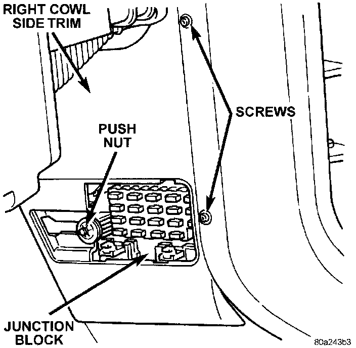

Turn Signal Flasher: Service and Repair
Combination FlasherREMOVAL
WARNING: ON VEHICLES EQUIPPED WITH AIRBAGS, REFER TO AIR BAGS AND SEAT BELTS/AIR BAGS BEFORE ATTEMPTING STEERING WHEEL, STEERING COLUMN, OR INSTRUMENT PANEL COMPONENT DIAGNOSIS OR SERVICE. FAILURE TO TAKE THE PROPER PRECAUTIONS COULD RESULT IN ACCIDENTAL AIRBAG DEPLOYMENT AND POSSIBLE PERSONAL INJURY.
1. Disconnect and isolate the battery negative cable.
2. Remove the fuse access panel by unsnapping it from the right cowl side trim panel.
Right Cowl Side Trim Panel Remove/Install:

3. Remove the push nut that secures the right cowl side trim panel to the junction block stud.
4. Remove the two screws that secure the right cowl side trim panel to the right front door opening trim.
5. Remove the right cowl side trim panel.
6. Unplug the combination flasher from the junction block.
7. Install the combination flasher by aligning the flasher terminals with the cavities in the junction block and pushing the flasher firmly into place.
8. Connect the battery negative cable.
9. Test the combination flasher operation.
10. Install the right cowl side trim panel and the fuse access panel.